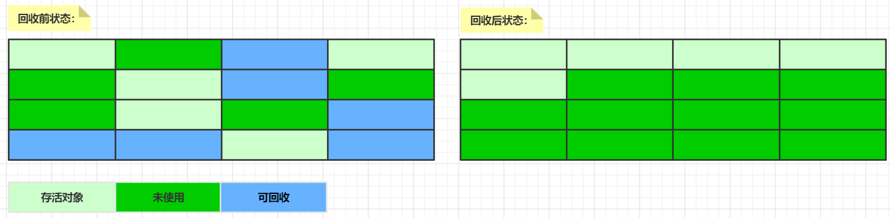

原文连接:https://www.cnblogs.com/coding-diary/p/11722306.html
Java 内存运行时区域中的程序计数器、虚拟机栈、本地方法栈随线程而生灭，栈中的栈帧随着方法的进入和退出而有条不紊地执行着出栈和入栈操作。每一个栈帧中分配多少内存基本上是在类结构确定下来时就已知的（尽管在运行期会由 JIT 编译器进行一些优化），因此这几个区域的内存分配和回收都具备确定性，不需要过多考虑回收的问题，因为方法结束或者线程结束时，内存自然就跟随着回收了。
而 Java 堆不一样，一个接口中的多个实现类需要的内存可能不一样，一个方法中的多个分支需要的内存也可能不一样，我们只有在程序处于运行期间时才能知道会创建哪些对象，这部分内存的分配和回收都是动态的，垃圾收集器所关注的是这部分内存。
自动垃圾收集
自动垃圾收集是查看堆内存，识别正在使用那些对象，那些对象未被删除，删除未被使用对象的过程。使用中对象或引用的对象意味着程序的某些部分任然维护指向该对象的指针。程序的任何部分都不再引用未使用的对象或未引用的对象，则可以回收未引用对象的内存。在C语言中，内存的分配和释放是手动的过程，在Java语言中内存的分配和回收是由垃圾收集器自动处理的。
而在自动垃圾收集中如何确定那些内存需要被回收，通常来说第一步就是标记，利用引用计数，可达性分析等来标记那些内存正在使用，那些内存不在使用。
引用计数法
引用计数法主要是通过给对象中添加一个引用计数器，每当一个地方引用它时，计数器的值就加1，当引用失效时，计数器的值就减1，当计数器的值为0时，对象就是不可能被使用的，可以对其进行垃圾回收。引用计数法的实现简单，效率也比较高，但是它很难解决对象之间循环引用的问题。
可达性分析算法
可达性分析算法，也称为根搜索算法，这个算法的基本思路就是通过一系列的名为“GC Roots”的对象为起始点，从这些节点开始向下搜索，搜索所走过的路径称为引用链，当一个对象到“GC Roots”没有任何引用链相连，则证明对象是不可用的，可以对其进行垃圾回收。
简单来说，将对象及其引用关系看作一个图，选定活动的对象作为“GC Roots”，然后跟踪引用链条，如果一个对象和”GC Roots“之间不可达，也就是不存在引用，即可认为是可回收对象。
引用类型和可达性级别
引用类型：
- 强引用（Strong Reference）：最常见的普通引用，只要还有强引用指向一个对象，就不会回收
- 软引用（Soft Reference）：JVM认为内存不足阿时候，才会去试图回收软引用指向的对象（缓存场景）
- 弱引用（Weak Reference）：虽然是引用，但随时有可能被回收掉
- 虚引用（Phantom Reference）：不能通过它访问对象，提供对象被finalize以后，执行指定逻辑的机制。
可达性级别：
- 强可达（Strongly Reachable）：一个对象可以有一个或多个线程可以不通过各种引用访问到的情况
- 软可达（Softly Reachable）：只能通过软引用才能访问到的状态
- 弱引用（Weakly Reachable）：只能通过弱引用访问时的状态，当弱引用被清除的时候，就符合销毁条件
- 幻像可达（Phantom Reachable）：不存在其他引用，并且finalize过了，只有幻像引用指向这个对象
- 不可达（Unreachable）：意味着对象可以被清除了
垃圾收集算法
目前主流广泛使用的垃圾收集算法，主要有标记-清除算法（Mark-Sweep），复制算法（Coping）以及标记-整理算法（Mark-Compact）。
标记-清除算法：首先识别出所有要回收的对象，然后进行清除。标记，清除的过程效率有限，存在内存碎片化的问题，不适合特别大的堆。其他收集算法基本都是基于标记-清除的思路进行改进。
复制算法：划分两块同等大小的区域，收集时将活着的对象复制到另一块区域。复制过程中将对象顺序放置，就可以避免内存碎片化。但是复制加上预留内存有一定的浪费
标记-整理算法：类似于标记-清除，但为避免内存碎片化，它会在清理过程中将对象移动，以确保移动后的对象占用连续的内存

分代收集
根据对象的存活周期，将内存划分为几个区域，不同区域采用合适的垃圾收集算法。目前主流的JVM一般将堆内存分为新生代和老年代（大小比列为1：2），而新生代又被分为了eden、from survivor、to survivor（大小比列为8:1:1）。在新生代中，每次垃圾收集时都发现有大量对象死去，只有少量存活，那么就可以选用复制算法，只需付出少量对象的复制成本就可以完成收集。在老年代中，对象存活率高，就可以使用标记-清除，标记-整理算法。
新生代几乎是所有JAVA对象出生的地方，JAVA对象申请的内存和存放都是在这个地方，JVM每次只会使用新生代中的eden和其中一块survivor来为对象服务，所以无论什么时候，都会有一块survivor空间空闲。当对象经过一次minor gc后仍然存活，并且能够被另外一块survivor所容纳，则使用复制算法将这些仍然存活的对象复制到另外一块survior区域中，然后清理掉eden和之前使用的survivor区域，并将这些存活的对象年龄+1，以后对象在survivor中每熬过一次minor gc则年龄增加1，当年龄达到某个值时（默认15，通过设置参数-XX:MaxTenuringThreshold来设置），这些对象就会进入老年代。当然，对于一些较大的对象可以直接进入老年代，可以根据-XX:+PretenureSizeThreshold设置大对象进入老年代的阈值。
新生代采用复制算法：
老年代使用标记-整理算法：
垃圾收集器
垃圾收集算法只是内存回收的理论方法，垃圾收集器才是内存回收的具体实现。Java虚拟机规范中对垃圾收集器的实现没有具体的规定，不同厂商，不同版本的垃圾收集器可能会差别很大。目前常见的垃圾收集器主要有Serial收集器，ParNew收集器，Parallel Scavenge收集器，Serial Old收集器，Parallel Old收集器，CMS收集器，G1收集器。这些垃圾收集器各有优劣，一般都是组合在一起使用，下图展示了在新生代和老年代可用的垃圾收集器组合：
Serial收集器
Serial收集器是一个串行收集器，使用单个线程来执行所有垃圾收集工作，适合单处理器机器，GC在工作的时候将暂停其他所有的工作线程，即”Stop The World“。Serial收集器是一个新生代的单线程收集器，它使用复制算法，是虚拟机在client模式下的默认新生代收集器，可以通过设置参数-XX:+UseSerialGC来使用。
ParNew收集器
ParNew收集器可以理解为串行收集器的多线程版本，其整体算法和Serial比较相似，除了使用多线程进行垃圾回收，其他的基本和Serial收集器一样。ParNew收集器是虚拟机在server模式下的默认新生代收集器，可以通过设置参数-XX:+UseParNewGC来使用。默认情况下它开启的线程数和CPU数量相同，也可以通过设置参数-XX:ParallelGCThreads来配置垃圾收集的线程数。
Parallel Scavenge收集器
Parallel Scavenge收集器也是一个新生代的并行垃圾收集器，使用的也是复制算法。Parallel Scavenge收集器的目标是达到一个可控制的吞吐量。吞吐量就是CPU运行用户代码的时间与CPU消耗的总时间的比值，即吞吐量=运行用户代码时间/（运行用户代码时间+垃圾收集时间）。Parallel Scavenge收集器提供-XX:MaxGCPauseMillis来控制最大垃圾收集停顿时间和-XX:GCTimeRatio来直接设置吞吐量的大小。
Serial Old收集器
Serial Old收集器是Serial收集器的在老年代使用的版本，它采用了标记-整理算法，可以通过设置参数-XX:+UseSerialOldGC来使用。
Parallel Old收集器
Parallel Old收集器是Parallel Scavenge收集器的老年代版本，使用多线程和标记-整理算法，可以通过设置参数-XX:+UseParallelOldGC来使用。
CMS收集器
CMS收集器是一个并发收集器，CMS即Concurrent Mark Swap，主要用于老年代，使用标记-清除算法，可以通过设置参数-XX:+UseConcMarkSweepGC来使用。CMS收集器可以并行的执行用户程序和垃圾回收，这样就可以减少回收的停顿时间。CMS收集器设计的主要目的就是为了减少回收停顿时间，目前很多的Java应用都集中在互联网网站或B/S系统服务端，这类应用尤其重视服务的响应速度，希望系统停顿时间最短，CMS收集器非常符合这类应用的要求。当然，CMS收集器也有自己的缺点，它会占用更多的CPU资源，并和用户线程争抢，同时由于采用标记－清除算法，存在着内存碎片化的问题，长时间运行等情况下可能发full gc导致恶劣的停顿。
CMS收集器垃圾收集的整个过程有4个步骤，初始标记，并发标记，重写标记以及并发清除。其中初始标记和重写标记任然需要”Stop The World”，但是速度很快，整个过程中耗时的操作在并发标记和并发清除阶段，在这个过程中，收集器线程都可以和用户线程一起工作。
G1收集器
G1（Garage First）收集器是当前垃圾收集器技术最前沿的成果，在JDK7中开始使用（可以通过配置-XX:+UseG1GC使用），从JDK9开始G1已经成为JVM默认的垃圾收集器。G1垃圾收集器也是以关注延迟为目标、服务器端应用的垃圾收集器，其目标就是取代CMS垃圾收集器。
G1采用了分区(Region)的思路，将整个堆空间分成若干个大小相等的内存区域，每次分配对象空间将逐段地使用内存，这样最大的好处就是化整为零，避免全内存扫描，只需要按照区域来进行扫描即可。启动时可以通过参数-XX:G1HeapRegionSize=n可指定分区大小(1MB~32MB，且必须是2的幂)，默认将整堆划分为2048个分区。在堆的使用上，整个内存分区不存在物理上的年轻代和老年代的区别，也不需要完全独立的 Survivor to space 堆做复制准备。G1 只有逻辑上的分代概念，或者说每个分区都可能随 G1 的运行在不同代之间前后切换。
G1收集器整体采用标记-整理算法，局部是通过是通过复制算法，不会产生内存碎片，能充分利用多 CPU、多核环境硬件优势，尽量缩短”Stop The World”的时间
下图左侧为G1收集器的内存划分概图，红色为新生代（没有S的为eden区域，有S的为survivor区域），蓝色为老年代（带有H的表示humongous ，存放humongous objects，即大于等于region一半的对象）。右侧为G1收集器的垃圾收集环图，G1的垃圾收集在层次上可以分为两个阶段，young-only阶段和Space-reclamation阶段，在young-only阶段又分为Initial Mark ，Remark，Cleanup。